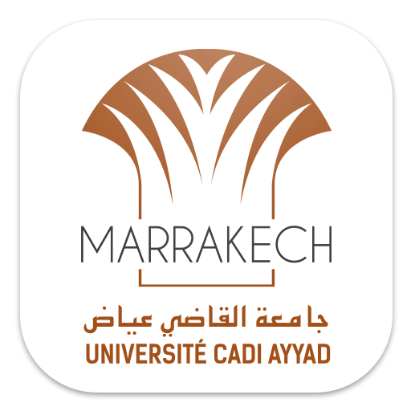

FSTG
Acceuil
La Faculté
Mots du doyen
FST en Bref
FST en chiffre
Architecture Pédagogique
Formation
Tronc commun
Licence
Cycle Master
Cycle d'ingenieur
Formation continue
Départements
Recherche
Laboratoires
Equipes
CED-SI
Bourses D'excellence
Activités
Manifestations
Activités Culturelle
Activités Sportives

Laboratoires
Laboratoires de recherche
Intitulé du Laboratoire
Département
Directeur du Laboratoire
Email
Laboratoire de Mathématiques Appliquées et Informatique
Mathématiques
HAKIM Abdelilah
abdelilah.hakim@gmail.com
a.hakim@uca.ma
Laboratoire d'Ingénierie Informatique et Systèmes (L2IS)
Informatique
RAKRAK Said
s.rakrak@uca.ma
Laboratoire des Bioressources et Sécurité Sanitaire des Aliments
Biologie
HAFID Jamal Eddine
hfjjamal@yahoo.fr
j.hafid@uca.ma
Laboratoire d'Agrobiotechnologie et Bioingénierie
Biologie
EL MODAFAR Cherkaoui
elmodafar@uca.ac.ma
Laboratoire de Recherche en Développement Durable et Santé
Chimie
TAOURIRTE Moha
m.taourirte@uca.ma
Laboratoire des Matériaux Innovants, Energie et Développement Durable (IMED-Lab)
Chimie
RAIHANE Mustapha
m.raihane@uca.ma
Laboratoire de Géoressources, Géoenvironnement et Génie civil (L3G)
Géologie
DAOUDI Lahcen
l.daoudi@uca.ma
Laboratoire des Procédés pour l'Energie Durable et l'Environnement (ProcEDE)
Physique
CHEHOUANI Hassan
chehouani@hotmail.fr
h.chehouani@uca.ma
Laboratoire des Systèmes Électriques, Efficacité Énergétique et Télécommunications
Physique
BELKHAYAT Driss
dbelkhayat@gmail.com
driss.belkhayat@uca.ma